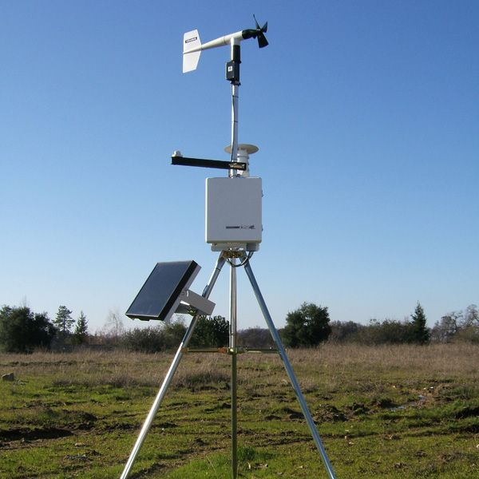

Estación meteorológica GarWeather
Bienvenidos a GarWeather, una estación meteorológica automática moderna para uso doméstico que satisface las necesidades actuales de los usuarios.

Datos actuales
Última actualización: 15/10/2025 21:51Temperatura
21.5°C
Humedad relativa
75%
Presión atmosférica
1010.4 hPa
Dirección del viento
NE
Velocidad del viento
15.4 km/h
Precipitación acumulada
0.0 mm
Ubicación
La estación meteorológica se encuentra actualmente en la Universidad Nacional de La Matanza, ya que fue desarrollada por alumnos de la carrera de Ingeniería Electrónica.